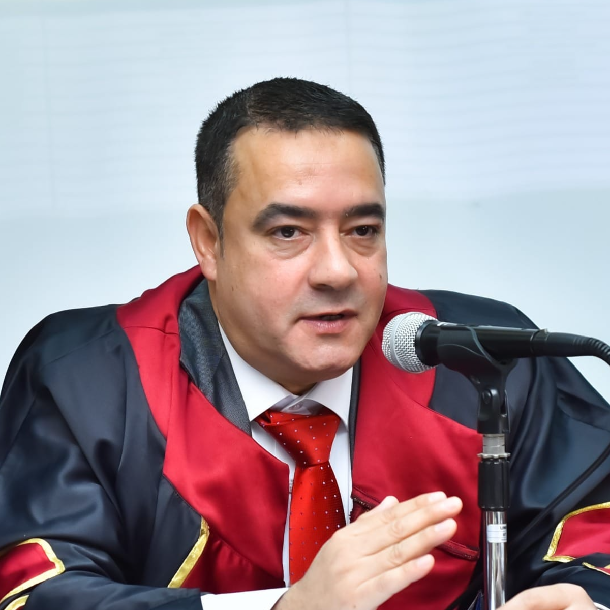

Professor of Sports Sciences
Former Vice Dean for Education & Student Affairs · Faculty of Sports Sciences
Executive Profile · الملخص التنفيذي
Three decades of university teaching, research leadership and institutional governance in the sports sciences — bridging academic excellence, quality assurance and international professional practice.
Prof. Dr. Ahmed Abdelhakim is a Professor of Sports Sciences at the University of Sadat City, specialising in aquatic sports, swimming and sports training, with more than thirty years of continuous university teaching.
Appointed Professor in 2016, he served as Vice Dean for Education & Student Affairs (2020–2022), where he led the faculty's education sector through strategic planning, self-study preparation, hybrid-learning transformation during the pandemic, and a portfolio of student-success initiatives that earned the faculty first-place university honours.
He is an approved reviewer for the Permanent Scientific Committees for Professor & Assistant-Professor promotions at the Supreme Council of Universities, a reviewer for thirteen scientific journals across Egypt and Iraq, and an International Lecturer certified by the International Life Saving Federation (ILS).
His scholarly record comprises seven authored books, more than twenty-three published studies, and the supervision and examination of twenty-six master's and doctoral theses — complemented by deep expertise in academic quality assurance and accreditation.
Executive KPI Dashboard · مؤشرات الأداء
Personal Profile · البيانات الشخصية
Official identification and professional contact information.
Field of Specialisation
Academic Qualifications · المؤهلات العلمية
A foundation in physical education and the sports sciences, built across leading Egyptian universities and reinforced by international professional qualification.
University Degrees
Professional & International Qualifications
Faculty Development & Specialised Training
Career Progression · التدرج الوظيفي
A continuous ascent through every academic rank — from Demonstrator to Professor and Vice Dean — across Menoufia University and the University of Sadat City.
Concurrent Academic Appointments
Academic Leadership · المناصب القيادية
From faculty executive office to institutional governance — chairing and serving on the committees that steer education, quality, student affairs and strategy.
Quality & Accreditation · الجودة والاعتماد
A practitioner of institutional quality — from strategic planning and self-study to program specification, measurement and continuous improvement.
Quality Roles & Responsibilities
QA Competency Map
Specialised QA Training
Quality Outcome — Vice-Dean Tenure
Established electronic question banks across 24+ undergraduate courses and standardised examination & student guides — earning the Faculty first place at university level for assessment quality.
International Experience · الخبرات الدولية
International certification, cross-border scholarly review, global publication and professional federation membership.
International Roles & Contributions
Professional Memberships
Egypt · Iraq
Selected International & Regional Conferences
Reviewing & Evaluation · التحكيم العلمي
A trusted evaluator of academic promotion and scholarly publication — nationally and internationally.
Promotion & Evaluation Committees
Scientific Journals Reviewed
+ Central Promotions Committee, Diyala University (Iraq) & further sport-science periodicals.
Research Achievements · الإنتاج العلمي
A sustained, decades-long research output centred on aquatic-sports performance, training science and educational technology.
Publications by Period
Continuous publication across nearly two decades, with a marked resurgence in 2023–2025.
Research Focus Areas
Publications Showcase · الأبحاث المنشورة
Twenty-three studies in local and international periodicals — organised by field of inquiry.
Swimming Performance & Biomechanics
Training Science & Physiology
Technology-Enhanced Learning
Motor Learning & Teaching Strategies
International Journals
Books & Authorship · المؤلفات العلمية
Seven authored volumes — including a four-part reference series on aquatic sports — published by Sami Press.
Teaching Experience · الخبرة التدريسية
Twenty-four courses across undergraduate, postgraduate and specialised professional programs — at the University of Sadat City and the Arab Academy for Science, Technology & Maritime Transport.
Undergraduate — Faculty of Sports Sciences
Undergraduate — General Education
AASTMT — Maritime Transport
Postgraduate — Diploma · Masters · PhD
Professional Training & Continuing Education
Postgraduate Supervision · الإشراف العلمي
Supervision and examination of twenty-six master's and doctoral theses across the University of Sadat City and Alexandria University.
By Institution
Role
Supervised Research Areas
Professional Impact · الأثر المهني
The cumulative footprint of three decades — across teaching, leadership, research, quality, international practice and academic service.
Vice-Dean Tenure — Education & Student Affairs
Certificates & Recognition · الشهادات والتكريم
Official appointments, professional certifications and the leadership-qualification credential for senior university office.
Official Appointments
Professional Certifications
Leadership Qualification Programme · 2021
Completed the full training package qualifying for senior university leadership positions:
Faculty Honours During Vice-Dean Tenure
General Shield of the cultural & guidance festival · University-level Ideal Student award · first-place sports & arts festival honours · gold medal in African & Mediterranean wrestling · first University-Student-Union Vice-President seat — all achieved under the education sector's leadership, 2020–2022.
Academic Legacy · الإرث الأكاديمي
A holistic legacy spanning the full breadth of the academic profession.
Professor of Sports Sciences
Former Vice Dean for Education & Student Affairs · University of Sadat City
“Dedicated to Academic Excellence, Research Innovation, and Educational Leadership.”